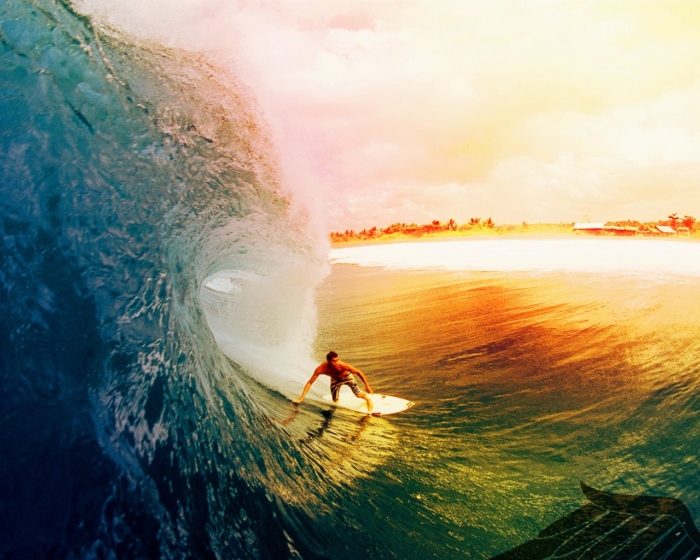
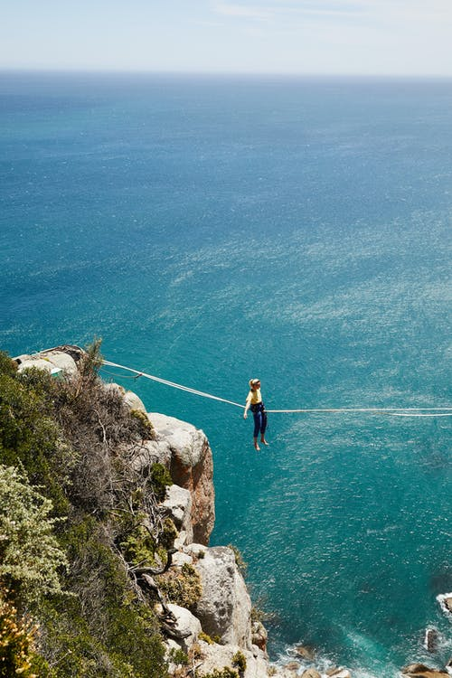
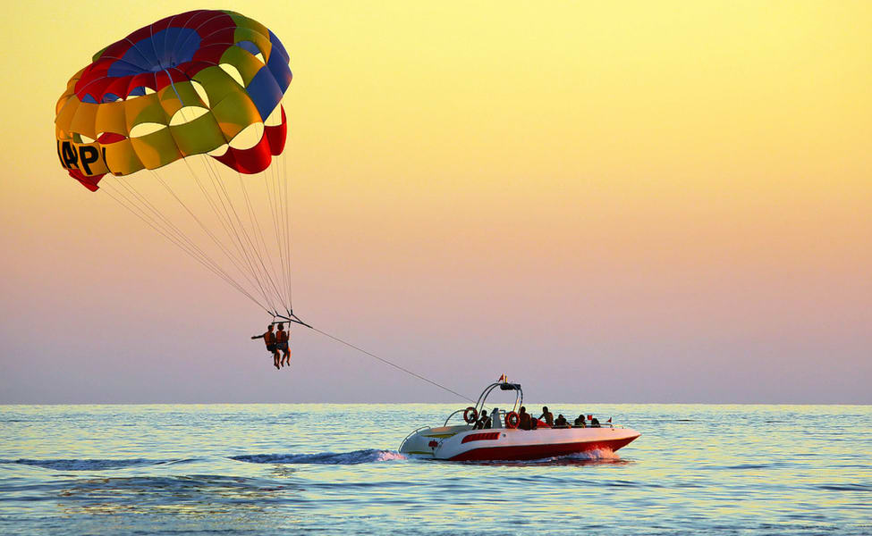
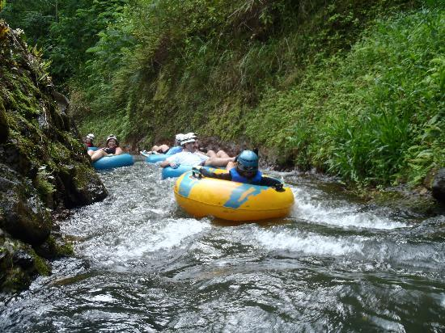
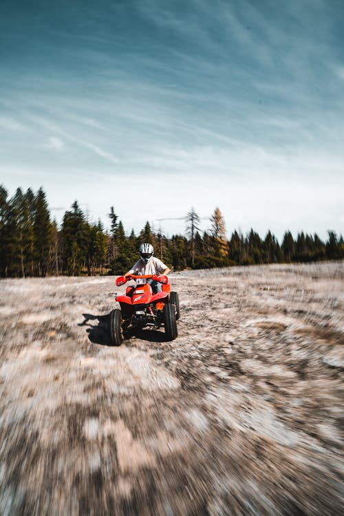
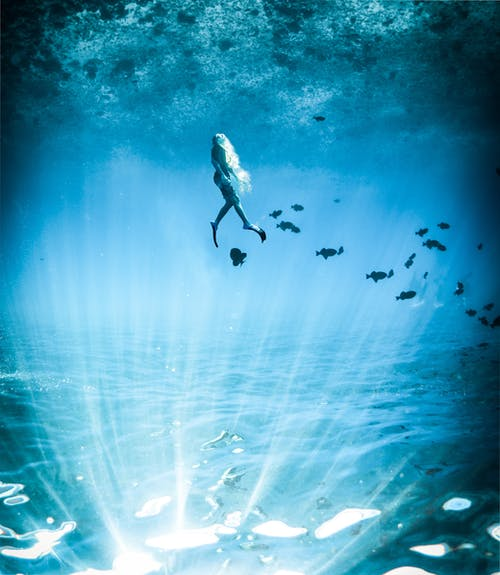

|  | SURFINGSurfing was born in Hawaii and is deeply intertwined with its history and culture. If you dream of riding the waves, there’s no better place to learn how to surf and truly commune with the ocean. Learn about the origins of surfing in Hawaii and find out where you can watch the pros or take a surfing lesson on your visit. Big wave season in Hawaii happens roughly between November and February on Hawaii’s north shores. You can watch surfers on every island, but some of the best surfing competitions in the world are held on Oahu’s North Shore in November and December, including the biggest them of all, the Vans Triple Crown of Surfing. If you’re planning to watch the pros in action during these events, be sure to get to the North Shore early because traffic can be heavy.Almost every island offers surfing lessons where you can learn the basics of the sport. Lessons run from one to two hours and are taught by experienced surfers in gentle breaks. Longboards are used to make it even easier for first-timers to learn, and a push from your instructor will help you get started. Waikiki Beach is still one of the best spots in Hawaii to get on your feet and ride your first wave.Stand-up paddle boarding is a variation on surfing that is becoming very popular Hawaii. In stand-up paddle boarding (SUP), riders stand upright on wider, longer boards and use a paddle to maneuver. Great for a core muscle workout, SUP is often used more for fitness rather than for riding waves. Lessons are highly recommended for your safety and for the safety of your fellow beachgoers and surfers. |
|  | ZIPLININGFly past waterfalls on the Island of Hawaii and sweeping views of the Maui coast and rainforest. Zoom over the canopies of Oahu or get a bird's-eye view of Kauai’s lush gardens. So many flying adventures to be had. With some of the longest courses and most breathtaking views, ziplining in Kauai is a must during your trip. Many of the ziplining companies on the island offer other outdoor activities in packages with their ziplines. Outfitters Kauai has a brand new 400-foot zipline and includes the Kipu Zipline Safari, where you’ll fly over locations made famous by movies such as Jurassic Park, Pirates of the Caribbean and Raiders of the Lost Ark. Just Live! Zipline Tours & Outdoor Gear Store offers climbing and rappelling in addition to their canopy zipline. Or, head to Koloa Zipline for stunning views of the Pacific Ocean and lush farmlands. Or put a little zip in your evening and do the Sunset Zip tour for a truly breathtaking experience!.See Oahu like you’ve never seen it before – from high in the air. The island features four main zipline companies including CLIMB Works Keana Farms located on the North Shore. This three-hour guided tour provides interesting facts about Hawaiian history along with the excitement of an outdoor adventure. Enjoy eight dual-line ziplines which range from 500 feet to nearly half a mile long, as well as two rappels, three sky bridges and a fun ATV adventure. Experience Oahu like the birds do. |
|  | PARASAILINGSee what the birds see when you soar above the crystal-clear waters of Hawaii’s beaches with a parasail. At heights of up to 1,000 feet in the air, parasailing offers unprecedented views of the coastline, and it’s an unforgettable way to enjoy a day at the beach. Ride solo or tandem with friends or family. It’s a great activity for older kids and adults alike. There are a variety of parasailing companies on the Hawaiian Islands, and the sport is even offered at some beachfront hotels. See Leahi (Diamond Head) and the Honolulu skyline from the air. Companies such as Hawaii Water Sports Center provide parasailing just minutes from Waikiki Beach. Located at Koko Marina, this aquatic center also features jet skiing, scuba diving, wakeboarding and water skiing. If you want to try a unique variation on parasailing, head to H20 Sports Hawaii for a water-propelled jet pack experience. Maui is a popular destination for parasailing enthusiasts. From May through December, there are a number of great beaches for parasailing including Hookipa Beach Park. UFO Parasail has been bringing fun ocean activities to Maui and the Island of Hawaii since 1985. They use state-of-the-art winch boats to float you on and off for safe, dry landings.If you like water sports with easy access, the Best Western Pioneer Inn, located on Lahaina Harbor, provides a variety of activities for its guests. In addition to parasailing, they offer scuba diving, snorkeling, fishing, yacht- and submarine cruises, plus easy beach access for sunbathing – all just minutes from your room. |
|  |
MOUNTAIN TUBINGTake a relaxing journey down the flowing waters of a historic irrigation system past the emerald green landscape of Kauai. This mountain tubing excursion, offered exclusively by Kauai Backcountry Adventures, takes visitors age 5 and over on a guided tour through long canals that were built in 1893 to bring water to sugar crops at Lihue Plantation. You’ll wind your way through pristine scenery with views of the mountains and Waialeale Crater on a relaxing, fun day.Tours start in a four-wheel drive vehicle through the terrain of the large Lihue Plantation before embarking into the tubing adventure.Guests will receive a headlamp to help them navigate the tunnels. At the end, enjoy a picnic lunch and a cool dip at a natural swimming hole.Mountain tubing is highly popular, so you’ll want to be sure to book your tour at least one week in advance as Kauai Backcountry Adventures tends to sell out quickly. |
|  |
ATV TOURSThere are many ways to explore Hawaii’s stunning scenery and rich history. Trekking through lush landscapes on an all-terrain vehicle (ATV) is one of the most exhilarating. Many of Hawaii’s islands offer guided ATV tours that usually last from 1 ½ to 3 hours. While driving ATVs is restricted to visitors who are at least 16 years of age, a number of companies feature multi-seat ATV buggies that can accommodate keiki (kids) or passengers who prefer to ride along. Whichever island you visit, there are many not-to-be-missed ATV adventures – from driving through private ranch land on Oahu and the Island of Hawaii to zooming through the lush jungles of Kauai or exploring thousands of pristine acres on Lanai.Explore Kauai's lush tropical jungle on an easy-to-use all-terrain vehicle with Kauai ATV on the south side of the island. You’ll also have the opportunity to view rare wildlife and breathtaking vistas. Kipu Ranch Adventures offers a top eco-tour and guides visitors through the rich history, landscape and legends that make Kauai unique. Ride an ATV through Gunstock Ranch, home of Oahu's first Hawaiian Legacy Forest. This 45-year-old, family-owned horse and cattle ranch also has plenty of other adventure options including horseback riding, hiking and walking tours. |
|  | SUCBA DIVINGWith 1,200 miles of coral reef fringing the Hawaiian Islands, snorkeling and scuba diving are two of the island's most popular water activities. The South Shore of Molokai is home to Hawaii’s longest barrier reef. At 28 miles, these lush underwater gardens are teeming with green sea turtles, spotted eagle rays and a variety of tropical fish.Don’t let the name scare you away from Shark’s Cove on the North Shore of Oahu—this rocky bay with clear, shallow waters is one of the top snorkeling and shore-diving locales in the world (and no, sharks aren’t common here).World-class snorkeling and diving can be found just off the shore of Maui at Molokini Crater, where crystal-clear waters support an exceptional diversity of marine life.Lydgate Beach Park is protected by a rock barrier, making its calm waters perfect for keiki (kids). The tide pools near Hulopoe Bay are your best bet for snorkeling, while the lava caverns of Lanai Cathedrals are a spectacular destination for a boat dive. With more miles of coastline than any other Hawaiian Island, the island of Hawaii is a haven for marine life. Locals and visitors alike flock to the gentle shores of Kealakekua Bay and Honaunau Bay on the Kona Coast . |
SURFING
If you dream of riding the waves, there’s no better place to learn how than right here in the birthplace of surfing.
ZIPLINING
Soar through Hawaii's lush canopies on some of the longest ziplines in US and some of the most scenic in the world.
PARASAILING
Lift off on a parasailing adventure and get a bird’s eye view of Hawaii’s breathtaking coastline from up to 1,200 feet in the air.
MOUNTAIN TUBING
Strap on a headlamp and hop into a tube to explore inland canals, tunnels and flumes on this only-in-Kauai adventure.
ATV TOURS
Explore rugged terrain and hord to reach parts of the Hawaiian Islands on ATV
SUCBA DIVING
Come face to face with tropical fish, spotted eagle rays and green sea turtles on an underwater adventure in Hawaii's 1,200 miles of coral reef.